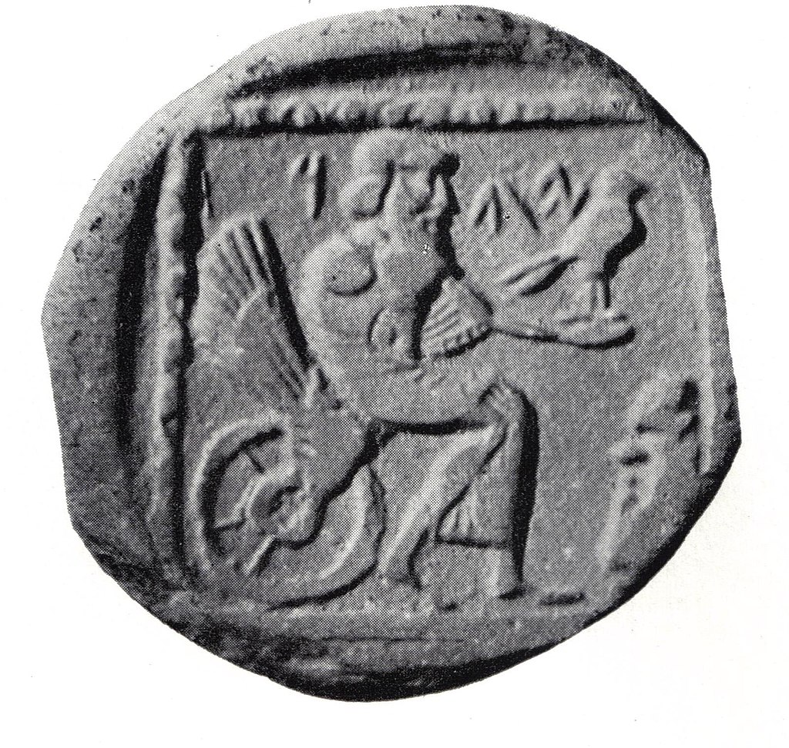

Основные термины и понятия иудаизма
Тора – является самым важным и священным текстом иудаизма. Она состоит из пяти книг Моисея: Бытие, Исход, Левит, Числа и Второзаконие. Тора содержит законы, истории, моральные уроки и руководство для жизни. Она считается словом Божьим, данной Моисею на горе Синай. Тора читается и изучается в синагоге и является основой для многих религиозных обрядов и праздников.
Шаббат – это еженедельный ритуал, который начинается в пятницу вечером и продолжается до субботнего заката. В этот день иудеи отдыхают от работы и проводят время в молитве, чтении священных текстов и семейном общении. Шаббат также включает особые ритуалы, такие как зажигание свечей и благословение хлеба.
Галаха – традиционное иудейское право, совокупность законов и установлений иудаизма, регламентирующих религиозную, семейную и общественную жизнь верующих евреев.
Литваки – Представители наиболее классического направления в ашкеназской ветви современного иудаизма.
Ортодоксальный иудаизм – общее название течений в иудаизме, последователи которых являются продолжателями классической формы еврейской религии.
Гаоны – духовные лидеры еврейского народа, бывшие высшим авторитетом в толковании Пятикнижия Моисея и Талмуда и применении его принципов при решении галахических вопросов.
Ришониим – ведущие раввины и еврейские законодатели, жившие примерно в XI—XV веках главным образом в Западной Европе, вслед за эпохой гаонов и до написания Шулхан Аруха.
Шулхан арух – кодекс практических положений устного закона, составленный в XVI веке раввином Йосефом Каро, который подвёл итог кодификационной деятельности галахических авторитетов многих поколений.
Яхвизм – в современном религиоведении название раннего этапа формирования иудаизма.
Моисей – еврейский пророк и законодатель, основоположник иудаизма, организовал Исход евреев из Древнего Египта, сплотил израильские колена в единый народ и записал Моисеев закон. Важнейший пророк в иудаизме.
Исход – библейское предание о порабощении евреев (израильтян) в Египте, их массовом выходе по воле Бога из Египта под предводительством Моисея, теофании у горы Синай (Хорив), заключении завета между Богом и избранным народом, а также о скитаниях евреев до начала завоевания Ханаана.
Пейсы – неподстриженные волосы на висках, традиционный элемент причёски религиозных евреев-мужчин. Согласно обычаям иудаизма, верующие мужчины носят пейсы, бороду и покрывают голову.
Хай – символический смысл знака «хай» в еврействе связан с важностью и ценностью жизни. В иудаизме считается, что Бог является источником жизни, и «хай» служит напоминанием о значимости каждой жизни и обязательстве уважать и беречь ее.
Символика иудаизма:

Бог в представлении иудаистов:

Храм иудаизма: